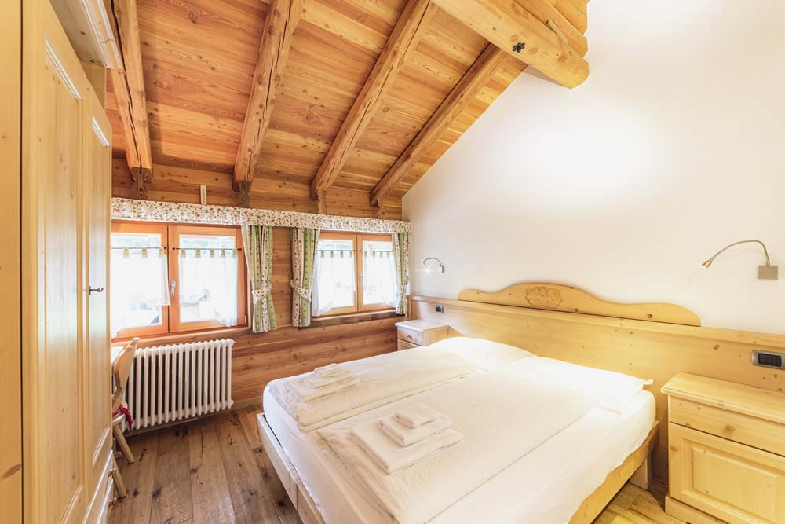
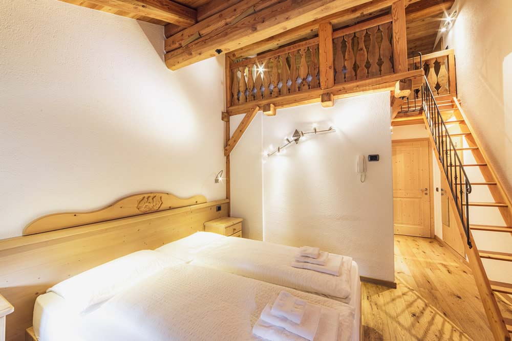
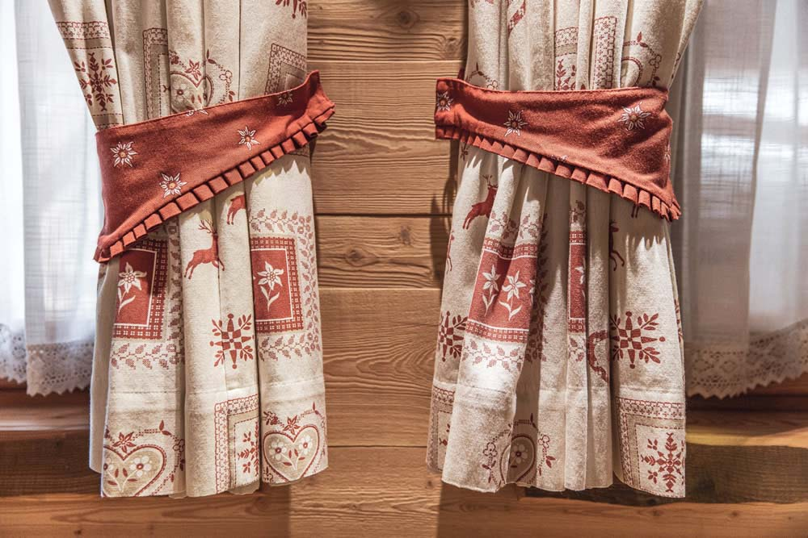

Camera doppia
- LETTO
- MATRIMONIALE
- BAGNO
- PRIVATO, CON DOCCIA
- ATTORNO
- LEGNO DI CIRMOLO



La luce del mattino sui prati, le tende tirolesi, il letto in legno: la doppia è la camera più raccolta del maso, pensata per chi vuole solo silenzio.